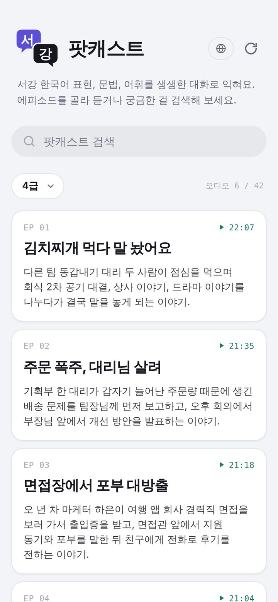
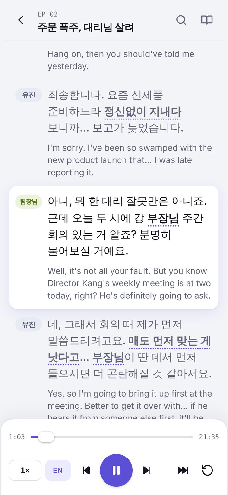
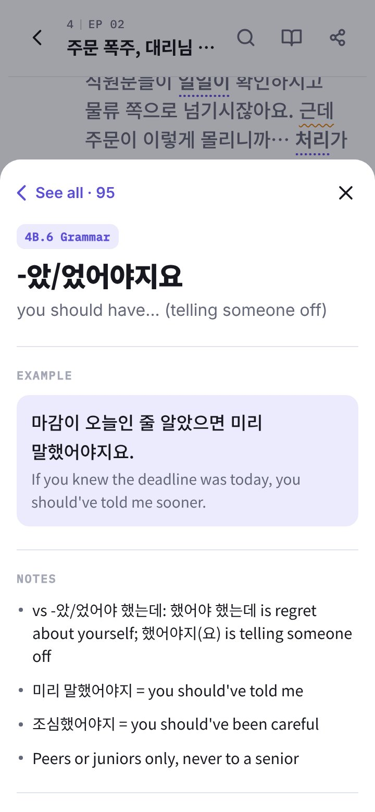

好用的韓語 Podcast、語言 App、跟讀 App 很多，卻沒有一個跟著我西江的課程走
每本教材都有幾百個表達，課外聽到的內容，卻很少和課堂上學的對得上。字卡有幫助，但一次只給一句。我想要又長又自然的對話，內容完全取自課本，拿來練耳朵、跟著念。我先試著用 NotebookLM 來做。結果它自己即興聊了起來，用母語人士的語速說話，還搬出一堆課本以外的單字。
每個表達、文法和單字，都出自西江 3 級和 4 級的教材手冊。
真實的情境與語體，念得夠慢，聽完就能跟著說。
字幕有他們的語言，不用安裝，也不用註冊。一個連結就好。
做 Podcast 之前，我先用 ElevenLabs 幫 4,000+ 張字卡配了音。要讓它們聽起來像真人，花了不少功夫調整
早晚間
早晚间 zǎowǎnjiān · Chinese says 不久 bùjiǔ
vs 곧: 곧 is soon with a clear near time (곧 도착해요); 조만간 is a vaguer "one of these days".
조만간 한번 보자 = let's meet up soon · 조만간 연락할게 = I'll be in touch soon
這張字卡的實際音檔，用 ElevenLabs 配音，語氣調成開朗輕鬆。
讓你看到它在大家真的會說的句子裡怎麼用。
滿版的播放條，取代 Anki 那顆灰色小圖示。
原本的漢字、附拼音的簡體字，還有中文裡換成什麼說法。
列出最容易搞混的相似詞，還有它常搭配的片語。
沉穩、工整，就是少了點生氣。
반말 配年輕的聲音，합쇼체 配成熟的聲音，每句再加一句白話的語氣指示，例如「嘆著氣，累壞了」。
똑바로 被念成了 똑까로。
語音拿到的是 똑빠로，字卡上照樣是正常拼法。
都是小失誤，複習時很容易漏聽。
音檔和字卡對不上，就自動重錄。
然後，我算了一下帳。光一個級別的 Podcast 腳本就有約 33 萬個字元，差不多是三個月的 ElevenLabs 點數。於是長篇音訊改用 Gemini 的免費額度，我在聲音上累積的心得，也全部一起帶了過去。
課本裡的對話很整齊。一次只有一個人說話，房間很安靜，每個字都清清楚楚。真實的對話可沒這麼乖
每張字卡都配上一個真的會說出這句話的情境：企劃向組長報告進度延誤、工作面試、喝燒酒時告白。語體跟著人際關係走，所以對總監說 합쇼체，朋友之間說 반말。用詞則完全照課本教的。
插話會提早一瞬間切進來，就跟在公司、在飯桌上一樣。
場景底下墊著餐廳的人聲和其他背景音。
台詞帶著真實的情緒、笑聲和越說越小聲的尾音，讓耳朵習慣真人說話的樣子。
兩位主持人演出情境，在合適的地方用上本集的表達。
接著跳出情境，用簡單的韓語解說重點台詞，中間還有「暫停，跟著說」的練習。
快速從頭再走一遍。
大致按比例：第 2 集有 100 句場景台詞，解說 74 句，複習 19 句。
沒有哪個 AI 樣樣精通，所以每項工作都交給做得最好、或最省點數的工具
ElevenLabs 的韓語聲音比較好，但按字元收費。Gemini 3.8 免費，還能一口氣念完整個場景，只是有些限制，得在設計上想辦法繞過去。
Gemini 的每個限制，我都各找了一個解法：配角另外配音再剪接進去，每句台詞都附上「和前面同一個聲音」的提示，聲音比對會抓出跑掉的地方，執行時間則排在免費額度剛重置之後。
把難念的音變和數字改寫成發音拼法，用的是和 Anki 字卡同一套工具。
規則 + Claude一次念完整個場景，每次請求兩位說話者，每集各自選角。
Gemini 3.8 TTS標出每個音節的時間，抓出用錯聲音的台詞。那一段就重做。
語音轉文字配角重新配音，再以相同音量剪接進去。插話會重疊四分之一秒。
音訊工具替每個場景混入背景音，例如餐廳的人聲，段落之間再加上過場音樂。然後，它會自己上線。
ElevenLabs每次調整都先拿短樣本試過，再套用到所有集數。
音碰上隔壁的音，念法就會改變。AI 語音有時卻只照著拼字念
每種語言都有這種現象。中文的「你好」兩個字都是三聲，念起來第一個字卻變成二聲。韓語的音變有明確的規則，學習者多半靠耳朵學起來，所以照字面念的語音，教出來的就是錯的發音。
硬的 ㄱ 碰到 ㅁ，會軟化成鼻音 ㅇ。意思是「湯汁」。
ㅌ 碰到 이 會變成 ㅊ，就像英文的「got you」念成「gotcha」。
ㅂ 接在 ㄱ 後面，會變硬成 ㅃ。意思是「直直地」或「好好地」。
一套規則會先把每個句子改寫成實際的念法，再交給語音。學習者看到的還是正常拼法。Anki 字卡上大部分念錯的地方，就這樣解決了。
語音轉文字記下的是拼法，所以就算發音錯了，轉回來的還是正確的字。發音問題只能在配音前，靠耳朵抓出來。
一個藏了六個難點的句子，分別照原文念、稍微修正、完全改寫拼法，交給 ElevenLabs 和 Gemini 各念一次。三種版本聽起來幾乎一樣，可見這些聲音大多早就懂規則了。
失誤多半出現在長段落裡兩個詞的交界處，例如質問語氣中的 고객 문의。現在這類詞組會連在一起寫，數字改用韓文寫出來，每集配音前，Claude 每天的檢查也會先標出容易出錯的地方。
一個音節一個音節跟著聽，再重播這句，自己說一遍
文法以紫色填滿，單字加上虛線。點任何一個，都能打開背後的字卡，看到筆記，還有它在本集出現的每個地方。



點一下就重複目前這句，跟讀再也不用拖進度條。
0.7× 到 1.2×，先放慢聽懂，再挑戰正常語速。
每集都會記住進度，不用登入。
EVN Archive · 電商